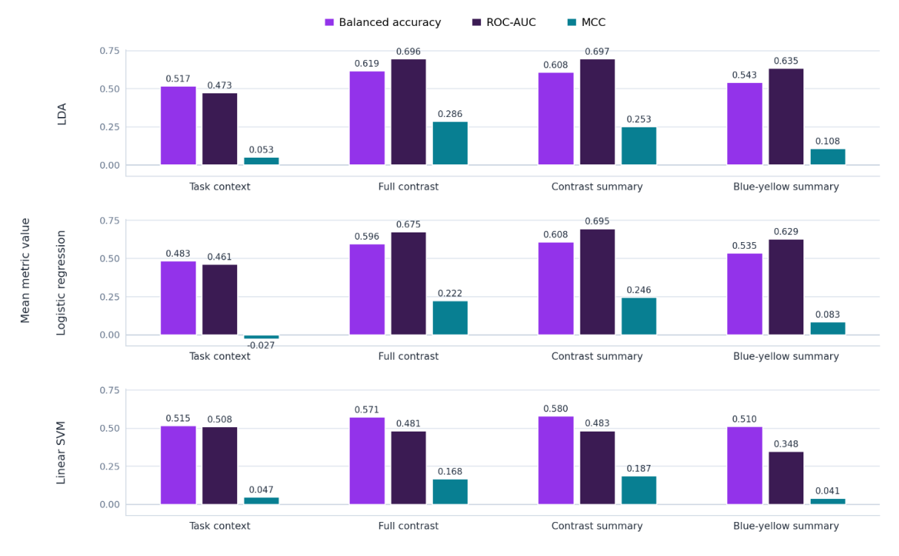

The research question
Could prefrontal brain responses recorded during walking distinguish autistic and neurotypical adults? The question moved beyond differences between group averages to ask whether those responses could classify a previously unseen participant.
I analysed an existing UCL PEARL walking-and-lighting dataset. The original experiment varied blue versus yellow illumination, dim versus bright light, and the presence of obstacles. Functional near-infrared spectroscopy (fNIRS) provided a portable measure of changes in cortical haemoglobin during these tasks.
My work began with the inherited, first-level SPM outputs. I did not collect the original recordings, repeat raw-signal preprocessing, or refit the original general linear model. My contribution was the secondary analysis: data validation, feature construction, classification, statistical testing and interpretation.
From SPM files to comparable features
A file being readable did not mean it was usable. I checked the design matrices, regressor names and stored beta estimates for compatible dimensions, finite values and the required task conditions. Four of the 36 participants had a required task column containing only zeros and were excluded before model fitting.
The final analytical cohort contained 32 participants: 19 neurotypical and 13 autistic. I pooled condition-specific oxygenated-haemoglobin beta estimates from 22 channels into seven predefined prefrontal regions, keeping the inputs compact and anatomically interpretable.
| Representation | Features | Purpose |
|---|---|---|
| Task-context ROI | 21 | Broad averages for yellow walking, blue walking and non-walking events |
| Full-contrast ROI | 28 | Four condition differences across seven regions |
| Contrast summary | 32 | Global, hemispheric and regional-family summaries of the four contrasts |
| Blue–yellow summary | 8 | A focused representation of the lighting-spectrum contrast |
The four contrasts were blue minus yellow, dim minus bright, obstacle minus no obstacle, and non-walking minus walking. They were constructed without group labels. Expressing differences within each participant also reduced the emphasis on broad participant-level response offsets.
Validation was part of the design
I compared shrinkage linear discriminant analysis (LDA), L2-regularised logistic regression and a linear support vector machine. With almost as many predictors as training participants, regularised linear models offered a more defensible starting point than a highly flexible classifier.
The outer validation loop used four stratified folds repeated 25 times. Each of the 100 outer evaluations held out participants entirely. Three-fold inner validation selected hyperparameters using only the outer training set. Standardisation, optional PCA and questionnaire imputation stayed inside the fitted pipelines.
- ValidateCheck the SPM design and required conditions before inclusion.
- RepresentAggregate channels into regions and construct fixed feature sets.
- TuneFit preprocessing and choose hyperparameters within training folds.
- EvaluateScore untouched participants using the same splits for all models.
- ChallengeRepeat the full comparison with shuffled participant labels.
Comparing 12 configurations creates another opportunity for optimism: one configuration may look best by chance. I ran 1,000 participant-label permutations, repeating the entire nested analysis and retaining the best score across all 12 configurations for each permutation. This produced a selection-aware reference distribution.
The result, including its limits
Contrast-based representations performed better descriptively than broad task-context averages. Full-contrast LDA produced the strongest observed result, but the error pattern was uneven: neurotypical specificity was high and autistic recall was low.
| Measure | Result |
|---|---|
| Balanced accuracy | 0.619 |
| ROC-AUC | 0.696 |
| Neurotypical specificity | 0.890 |
| Autistic recall | 0.348 |
| Matthews correlation coefficient | 0.286 |
| Selection-adjusted permutation p-value | 0.236 |

The configuration-specific p-value for full-contrast LDA was 0.0539. After selection across the 12 configurations, it was 0.2358: 235 of 1,000 shuffled-label runs achieved a best score at least as high as the observed result. The study therefore did not establish a reliable classifier or a clinically useful diagnostic tool.
The repeated evaluations reused the same 32 people. They helped characterise sensitivity to data splits; they did not turn a small cohort into 100 independent validation samples.
Looking beyond a single score
I examined participant-level prediction stability to distinguish people who were repeatedly misclassified from people whose predictions changed across splits. Errors were concentrated among a subset of autistic participants, making the overall score an incomplete description of model behaviour.
Adding the Sensory Perception Quotient (SPQ) to the full-contrast features produced small, classifier-dependent changes. It mainly changed the balance between recall and specificity rather than adding a consistent predictive benefit.
PCA provided a useful counterexample to the assumption that preserving variance preserves useful information. It retained a median of five components and 95.2% of total feature variance, yet balanced accuracy fell from 0.6185 to 0.5881. I projected PCA-space classifier coefficients back into the original standardised feature space and numerically checked their reconstructed decision scores.
Making the analysis reproducible
The final dissertation reports 87 passing automated tests across seven modules, with two expected questionnaire-merge warnings. Tests covered SPM validation, synthetic ROI calculations, contrast directions, invalid feature tables, nested-validation outputs, participant summaries, questionnaire matching and permutation statistics.
I documented random seeds, software versions, analysis scripts and aggregate outputs. The result is a reproducible research workflow whose assumptions and failure cases can be inspected, even when the scientific answer is inconclusive.
The next useful step is stronger evidence: a larger independent cohort, richer metadata and external validation. More model searching on the same small sample would not resolve the underlying uncertainty.
Project material
- Read the full dissertationPDF · 64 pages
- Explore the analysis codeCode, aggregate results and reproducibility notes